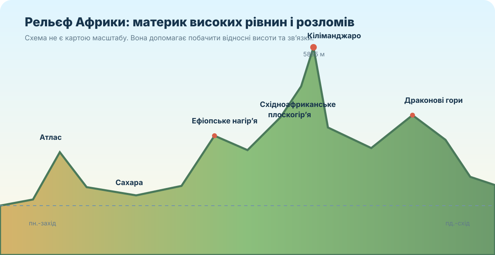
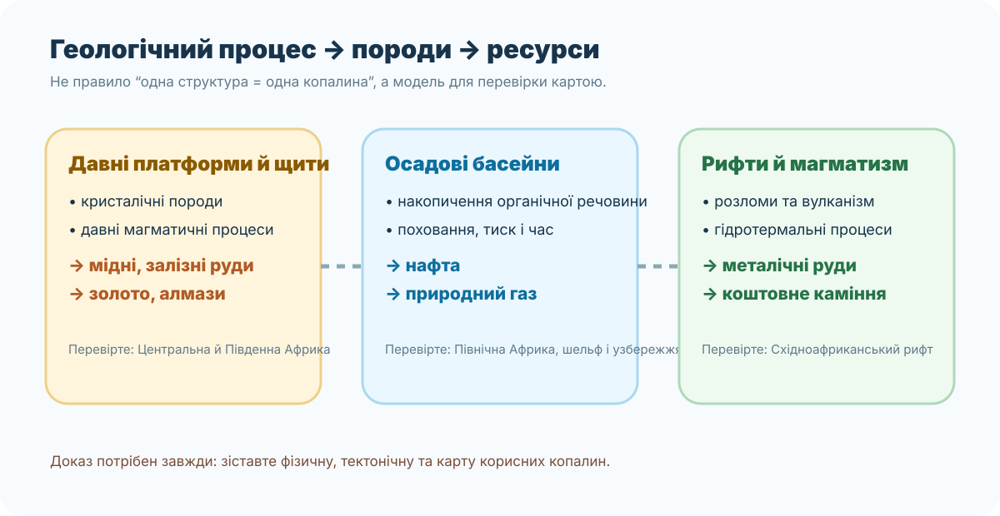

Чому Африка не схожа на материк «суцільних низовин»?
Спочатку оберіть гіпотезу. Правильність перевіримо картами й даними.

Схема показує відносні контрасти, а не масштаб. Доказ шукаємо на реальних картах нижче.
Знайдіть «каркас» рельєфу Африки
На фізичній карті шукайте не окремі назви, а закономірність: де зосереджені високі ділянки, де плато, де гірські краї.
Для висот використайте також глобальну топографію NASA. На карті OSM збільшуйте масштаб для пошуку назв.
Атлаські гори — окрема складчаста система вздовж північно-західної окраїни.
Ефіопське нагір’я та Східноафриканське плоскогір’я пов’язані з великим підняттям і рифтогенезом.
Драконові й Капські гори формують виразний гірський обрамлювальний пояс південної частини.
Що робить Східну Африку особливою?
USGS описує Східноафриканську рифтову систему як активний континентальний рифт завдовжки близько 3000 км — місце, де розтягнення земної кори формує розломи, вулкани й глибокі западини.
Модель «розтягнення кори»
Помірне розтягнення: формуються системи нормальних розломів і видовжені западини.
Перевірте за джерелом USGS
Порівняйте лінію рифту з районами Ефіопського нагір’я, Кенії, Танзанії та великих озер. Чому саме тут багато вулканів і високих плато?
Відкрити USGS: East African RiftЧому родовища не розкидані випадково?
Зіставляйте процеси, типи порід і ресурси. Не перетворюйте модель на абсолютне правило.

Інтерактив: структура → ресурс
Нафта й газ: перевірка фактами
USGS оцінює великі нафтогазові системи у Північній, Західно-Центральній та Східній Африці. Це пов’язано з геологічними басейнами, а не просто з «жарким кліматом».
USGS — оцінки нафти й газу АфрикиКонтурна карта: рельєф + ресурси
Позначте об’єкти, а потім сформулюйте закономірність. Галочки не замінюють нанесення на паперову або цифрову контурну карту.
А. Форми рельєфу
Б. Райони корисних копалин
Позначено 0 із 10 об’єктів.
Рифт наживо
Дивіться фрагмент про розломи й вулканізм. Після перегляду назвіть один доказ активної тектоніки та одну форму рельєфу, яка з нею пов’язана.
Систематизуємо те, що вже довели
Чому переважають рівнини й плато?
Основу більшої частини Африки становить давня Африкано-Аравійська платформа. Тому материк не має суцільного молодого складчастого поясу. Водночас великі ділянки платформи підняті, тому значні площі — це плоскогір’я та нагір’я.
Де головні гори?
Атлас лежить на північному заході, Капські та Драконові гори — на півдні й південному сході. Найвища точка — вулкан Кіліманджаро, 5895 м.
Чому Східна Африка висока?
Тут діє континентальна рифтова система: розтягнення кори, розломи, блокові підняття, вулканізм і глибокі западини створюють контрастний рельєф.
Чому багато корисних копалин?
Дуже давня геологічна історія, виходи кристалічних порід, магматичні й гідротермальні процеси та великі осадові басейни створили різні типи родовищ — від руд і алмазів до нафти й газу.
Доведіть твердження
Твердження: «Рельєф і корисні копалини Африки можна пояснити її тектонічною та геологічною історією краще, ніж випадковим розподілом».
Перевірте одну закономірність самостійно
Підручник
Опрацюйте параграф про рельєф і корисні копалини Африки у підручнику Гільберг Т. Г., Довгань А. І., Совенко В. В., 7 клас, 2024.
Електронний підручникМіні-дослідження
Оберіть один ресурс: нафта, мідь, боксити, золото або алмази. На карті знайдіть 2 райони поширення та поясніть їх через геологічну будову. Формат: 5–7 речень + карта/скриншот із джерелом.
Тест 10 балів
Спочатку введіть дані. Після цього відкриються 10 завдань по 1 балу.